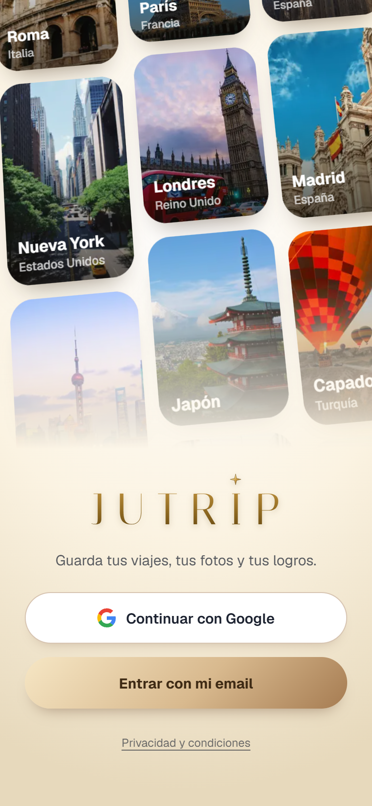

V40C · Fotos nuevas en la pantalla de entrada y el diamante del Vaticano
El mosaico
- Fuera: Florencia, Lanzarote, Cancún, Cartagena de Indias, Berlín y Praga (tarjetas, fotos del proyecto y datos).
- Entran con tu foto: Maldivas, Shanghái · China, Islandia, Japón, Estambul · Turquía (la Mezquita Azul) y Capadocia · Turquía (los globos). En Maldivas e Islandia (que son país) sale solo el nombre, sin repetirlo debajo.
- Cambian de foto por las tuyas: Londres (el Big Ben con el autobús rojo), Madrid (Cibeles con la bandera), Lisboa (los tranvías amarillos) y Nueva York (la calle con el Chrysler y el taxi amarillo).
- Se quedan: Roma, París, Barcelona y Ámsterdam. En total, 14 tarjetas.
- Recortes (4:5, mirando lo importante): Londres con el Big Ben y el autobús y sin la chica de abajo a la derecha; Shanghái con la Perla de Oriente; Japón con el Fuji y la pagoda (el Fuji queda algo pegado al borde: el recorte es estrecho y la pagoda manda); Islandia con la aurora y la persona pequeña; Maldivas con la barca y el agua; Nueva York con el Chrysler y el taxi; Madrid con la bandera y las torres; Estambul con los minaretes y la cúpula; Capadocia con el globo grande y su llama. Ninguna cara reconocible en grande.
- Peso: las 10 nuevas suman 111 KB (de 3 a 17 KB cada una; WebP de 240 × 300). Todo el mosaico: 163,8 KB (14 fotos), igual que antes (143 KB).
- Fuente y licencia:
docs/dias/FOTOS_ENTRADA.md dice «Unsplash (licencia Unsplash), elegida por Eric» en cada una de las 10; en «Créditos» (entrada «Fotos de la pantalla de entrada») hay «Fotos de Unsplash» y el enlace a su licencia.

El diamante del Vaticano
- Vuelve a llamarse «El Vaticano es tuyo» (en los datos de logros, las demos, los escaparates y los datos de ejemplo donde lo había cambiado en la V40B).
- La regla de la V40B sigue para los destinos (Roma, Lanzarote, Madrid…): ningún grado se llama «… es tuyo/a».
pruebaV40B deja fuera solo al Vaticano y comprueba que su diamante se llama «El Vaticano es tuyo».
- Ejemplos: el oro de Roma en el estudio de sonidos y en el ejemplo del resumen del viaje sale ahora como «Roma en el corazón» (el nombre de los datos), no «Roma es casi tuya». Una prueba (
pruebaV40B) lo vigila.
La prueba
pruebaV39C (108 comprobaciones): el mosaico tiene los 14 destinos elegidos y ninguno de los quitados (ni sus fotos); cada tarjeta tiene su foto; las 10 de Eric dicen Unsplash; el peso total es pequeño (163,8 KB).pruebaV40B (39) y pruebaJutrip en 0; también pruebaV36C, pruebaEntrarUnaVez y pruebaCuentas3.
Tu lista de comprobación de esta tanda
- Abre la app sin sesión: en el mosaico salen Londres, Madrid, Lisboa, Nueva York, Shanghái, Islandia, Japón, Maldivas, Estambul y Capadocia con tus fotos; no salen Florencia, Lanzarote, Cancún, Cartagena, Berlín ni Praga.
- Mira que en Londres no se ve la cara de la chica y que en Maldivas e Islandia el nombre no se repite debajo.
- La medalla diamante del Vaticano dice «El Vaticano es tuyo»; la de Roma, «Todos los caminos».
PARA ERIC
- Si el recorte de alguna foto no te convence (el Fuji en Japón, por ejemplo), dime cuál y lo ajusto: cada foto es un archivo pequeño de
public/fotos/entrada/ y el recorte de cada una está en una línea de scripts/entrada/prepararFotosV40C.mjs.
- Estambul y Capadocia son dos tarjetas distintas, las dos con «Turquía» debajo.
- Reiniciado el api-server al final. No se ha apagado el PC.